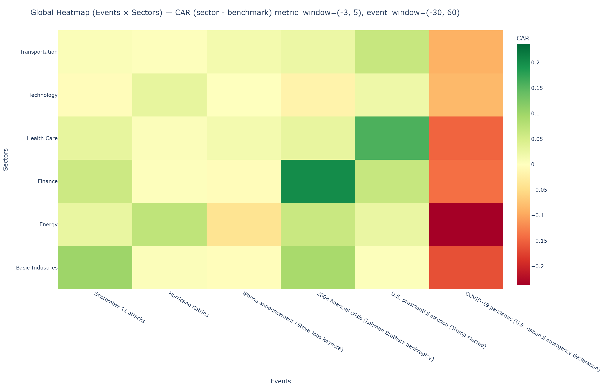
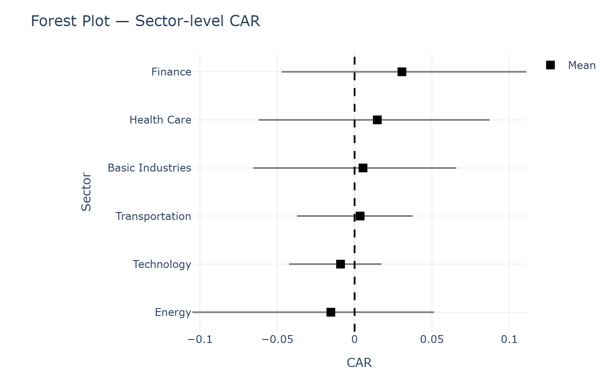

Over the past 25 years, the world has been repeatedly shaken by events that escaped prediction and control. Terrorist attacks, natural disasters, technological breakthroughs, political ruptures, and global health crises have punctuated recent history.
A market seen through its pulse
Financial markets are not just cold algorithms or rational systems. They are living, social organisms shaped by collective excitement and fear. Beneath charts and models lies a system that reacts, hesitates, panics and adapts.
At first glance, the NASDAQ 100 from 2000 to 2025 appears stable as a long-term rise. Yet the curve is not smooth, just like a pulse under stress. It carries drops, recoveries and sudden disruptions moments when the market loses its balance.
Some of these movements align with major events, such as the 2008 financial crisis. Others remain harder to explain. We will examine six landmark U.S. events to explore how crises translate into market behavior.
The four research questions
This data story is structured around four core questions, each corresponding to a chapter in our analysis.
These questions guide our exploration from immediate reaction to long-term recovery, from observation to interpretation.
To understand how markets feel, react, and recover, we perform a systematic
autopsy of financial crises. Each chapter dissects a different mechanism through
which global events translate into market behavior.
Data construction & sampling strategy
Méthodologie
Stock selection. The initial dataset (more than 8,000 assets) required rigorous selection to create a representative and usable sample.
Exclusion of ETFs. These instruments are composed of several stocks, often from different sectors. We excluded them to avoid ambiguity in sector analysis.
Classification. Stocks were classified across six sectors and segmented by market capitalisation size (small, medium, large).
Sampling. Ten stocks were selected for each sector-size combination, giving 30 shares per sector.
Assembly. Results were pooled by sector using averages to ensure robustness and limit the influence of isolated company behaviour.
Quantitative measures
Mathematics behind analysis
In order to characterise the reaction of financial markets to the events studied, the analysis is based on three main quantitative variables: cumulative abnormal returns (CAR), drawdown (in depth and duration) and recovery time after an event.
CAR
Relative to QQQ
Performance
CAR measures the performance of an asset relative to the market (QQQ), isolating sector-specific moves from the broad trend.
ARi,t = Ri,t - Rm,t
CARi(t1, t2) = Σ ARi,t
Positive: outperforming the market.
Negative: underperforming the market.
Drawdown
Depth & duration
Risk
Drawdown captures the maximum loss from a peak and how long it takes to climb back, revealing shock severity and persistence.
Long: slow absorption and correction of the shock.
Recovery
Time back to pre-event
Resilience
Recovery time measures how quickly an asset returns to its pre-event peak; if never regained, the horizon is censored.
Trec = trec - tpeak
Short: fast rebound and resilient sector.
Long/NA: persistent damage or incomplete recovery.
The Anatomy of Fear & Euphoria
When fear enters the system
Fear is rarely uniform. In some moments, it erupts suddenly and overwhelms the entire market. In others, it spreads slowly, hesitates, or even coexists with optimism. The same system, exposed to different shocks, can react in profoundly different ways.
This raises a fundamental question: when uncertainty strikes, does the market respond according to fixed rules, or does each event trigger a unique emotional reaction? Is fear an automatic reflex, or a context-dependent response shaped by expectations, narratives, and collective interpretation?
To explore this question, we begin by observing the market as a whole. Before focusing on individual sectors, we examine how the QQQ index behaves around six major events, all aligned on a common timeline. By normalizing each trajectory at the event date, we isolate the market’s immediate response to uncertainty.
Only then does the pattern emerge. Some events provoke sharp and immediate declines, others lead to hesitation, and a few are followed by rapid recoveries or even rallies. In certain cases, fear fades quickly; in others, it persists well beyond the initial shock. Yet across all events, one feature remains constant: a clear disruption around the moment the shock occurs.
This comparison reveals that fear does not have a single signature. The same market can panic, stall, or rebound depending not only on the magnitude of the event, but on how it is perceived and absorbed by investors.
This chapter zooms in on these first moments. By breaking each event down into sector-level reactions, we examine how fear enters the system — sometimes concentrated, sometimes systemic — and how its early form already hints at the dynamics that will follow.
Event
Sector
Selected: —
Updated
Select an event and sector above to reveal the narrative written in the insight JSON file.
CAR
Cumulative abnormal returns around the event
Image not available
Drawdown
Depth and duration of market drops
Image not available
Volcano
Cross-sectional impact during the shock
Image not available
Across the six events and thirty-six sectoral reactions, one insight emerges clearly: fear and euphoria do not enter the market uniformly. They follow distinct paths, shaped by the nature of the shock and the structural role of each sector.
Fear appears first as an imbalance. In sudden crises such as geopolitical attacks, financial collapses, or global health emergencies, it manifests immediately and violently, producing sharp drawdowns and intense trading activity. In these moments, sectors directly exposed to trust, mobility, liquidity, or global demand amplify stress, while more defensive sectors absorb it. The market fragments.
In contrast, not all disruptions trigger fear. Innovation-driven events and political shifts often give rise to anticipation rather than panic. In these cases, optimism remains concentrated, benefiting specific sectors while leaving others largely unaffected. Euphoria, unlike fear, does not spread systemically. It is selective. This asymmetry reveals a key feature of market behavior. Fear tends to propagate quickly and broadly, erasing sectoral boundaries during extreme stress. Euphoria, on the other hand, remains localized, reinforcing existing structures rather than dismantling them. The market does not simply react to events; it interprets them. Ultimately, this chapter answers the first research question: the anatomy of fear and euphoria is neither random nor symmetric. The same market can panic, hesitate, or rally depending on how a shock is perceived and which parts of the system are most exposed. The earliest reactions already contain the blueprint of what follows.
Understanding these first moments is essential. Before resilience can be measured, before recovery can be compared, the initial form of fear must be observed. The next chapter explores whether these early reactions translate into longer-term patterns or whether survival in the market follows a different logic altogether.
Sectoral Natural Selection
From Isolated Reactions to Relative Outcomes
In the previous chapter, sectors were examined in isolation to capture the "anatomy of initial stress". Observing how fear or euphoria manifested within each industry independently. This chapter adopts a broader perspective: rather than asking how each sector reacts on its own, we examine how they react relative to one another.
Once the first wave of shock passes, markets begin to differentiate. Capital flows shift and new hierarchies emerge as some industries stabilize while others continue to deteriorate. By observing the Cumulative Abnormal Return (CAR) relative to the QQQ benchmark, we can identify a form of "sectoral natural selection." This approach moves beyond absolute reactions to reveal the relative position of each sector within the market structure.
The central question is whether these outcomes are random or if specific types of crises systematically reshape sectoral hierarchies. To address this, we use heatmaps to provide a compressed, comparative view of sector trajectories over a 90-day period (from D-30 to D+60). This allows us to distinguish between:
Safe Havens: Defensive sectors that absorb stress and outperform during crises.
Exposed Sectors: Vulnerable industries that bear the brunt of the shock.
Opportunistic Beneficiaries: Sectors that adapt or capitalize on a sudden paradigm shift.
Each heatmap thus reveals the competitive hierarchy imposed by the market in response to the unexpected, exposing contrasts that remain invisible when sectors are analyzed in isolation.
Sectoral Natural Selection
Event
Selected: —
Updated
Select an event above to read the heatmap interpretation.
Sector Heatmap
Evolution of sector performance around the event
Image not available
By placing sectors side by side, rather than observing them in isolation, clear patterns begin to emerge. While Chapter 1 revealed how fear enters the system, this chapter shows how that fear reorganizes the market.
Across events, sectoral reactions are not random. Different types of crises consistently reshape relative performance, favoring certain industries while penalizing others. Defensive and structurally essential sectors tend to absorb stress during geopolitical and health-related crises, while cyclical and energy-dependent industries are more exposed. Political and innovation-driven events, in contrast, redistribute performance without triggering systemic fear.
Crucially, these patterns only become visible through comparison. When examined independently, sectoral reactions appear noisy and idiosyncratic. When viewed together, they reveal structure.
This chapter therefore answers the research question clearly but cautiously: crises do not produce random sectoral outcomes. They act as selective pressures that reorder the market, not through deterministic rules, but through recurring tendencies.
With these relative patterns established, the next chapter shifts focus once again — from who performs better or worse to how quickly the market recovers.
The Speed of Contagion
When does the system begin to heal?
In the previous chapters, we observed how stress enters the market and redistributes across sectors. We analyzed the intensity of fear and the hierarchy of relative outcomes. However, the severity of a shock is not defined by its initial impact alone; it is equally determined by its duration. Some disturbances provoke sharp reactions followed by rapid stabilization, while others leave the market weakened and unable to return to its previous state for months.
This chapter shifts the focus to the temporal dimension of the crisis. We seek to measure the system’s ability to absorb uncertainty and restore balance by observing how long it takes for different parts of the market to regain their pre-event equilibrium. Recovery time acts as a vital sign: it allows us to distinguish between temporary volatility shocks and structural trend breaks that linger like chronic conditions.
To quantify this pace of recovery and understand the depth of contagion, we employ boxplots for each of the six events studied. This approach allows for a precise analysis of the distribution of recovery times:
Indicator: The measurement is expressed in days required for the share price to return to its specific valuation on the day of the event.
Distribution Analysis: Our analysis focuses on three key metrics:
The Median: Reflecting the average velocity of recovery for a sector.
The Interquartile Range (IQR): Measuring the homogeneity of the sectoral response.
Outliers: Identifying isolated cases of extreme vulnerability or prolonged distress.
Together, these boxplots reveal whether a shock fades like a passing fever or persists as a long-term scar on the market's stability.
Recovery Time
Event
Selected: —
Updated
Select an event above to see the recovery chart and interpretation.
Recovery Time by Event
Distribution of days to regain pre-shock levels
Image not available
From shock to recovery
Across events, one pattern becomes clear: shocks do not leave the system at the same speed they enter it. Some propagate rapidly but dissipate just as fast. Others spread more slowly, embedding themselves deep into market dynamics.
Localized events tend to produce uneven but relatively quick recoveries, affecting specific sectors while leaving others largely intact. Systemic crises, by contrast, alter the market’s internal equilibrium. In those cases, recovery is not only slower — it is fragmented. Some sectors heal early, others remain impaired long after the initial shock.
More recent crises show a different rhythm. Despite their intensity, recovery often occurs faster and more synchronously across sectors. Information circulates more rapidly, expectations adjust sooner, and capital repositions with greater speed. The system reacts faster — but it also stabilizes faster.
Recovery time therefore tells us something fundamental. It reveals not just how hard the market was hit, but how deeply the shock disrupted its internal functioning.
Having traced how stress fades and balance returns, one final question remains: is resilience purely reactive — or can it be anticipated before the shock even occurs? That question leads us to the final chapter.
Predicting Resilience
Can resilience be diagnosed?
After observing how shocks emerge, spread, and eventually fade, we reach the final stage of our examination. The symptoms are familiar now. The reactions have been measured. Recovery times have been compared.
One question remains:
Is resilience merely something we observe in hindsight — or does the market carry pre-existing strengths that make some sectors more likely to recover than others?
In medicine, recovery is rarely random. Age, structure, exposure, and underlying conditions all shape how a body responds to stress. Markets may not be so different. Some sectors appear fragile under pressure, while others repeatedly regain balanceFais moi regardless of the nature of the shock.
This chapter explores whether resilience leaves a trace.
Recovery Snapshot
CAR at +60 days across events and sectors

Image not available
The heatmap below captures sector performance sixty days after each event, measured through cumulative abnormal returns relative to the benchmark. By freezing the market at a common recovery horizon, this visualization allows direct comparison across sectors and crisis types.
Several tendencies emerge clearly. Health Care displays a consistently positive recovery profile, largely independent of the event. Finance rebounds strongly after political and systemic disruptions, yet falters during health-driven crises. Energy reacts sharply to context, recovering after geopolitical shocks but suffering persistent losses after COVID-19. Technology benefits from innovation and political clarity, while remaining fragile under uncertainty. Basic Industries and Transportation show recovery patterns that depend heavily on the nature of the disruption.
Rather than revealing universal winners, this snapshot highlights conditional resilience — strength that depends on context.
What Drives Recovery?
Model-based view of factors linked to resilience

Image not available
Patterns alone do not explain resilience. To move beyond visual comparison, we introduce a model-based perspective designed to isolate which characteristics are systematically associated with faster recovery.
The forest plot summarizes the estimated influence of structural factors such as sector affiliation and firm characteristics on recovery outcomes. Each coefficient reflects how strongly a given factor shifts the probability or speed of recovery, holding others constant. Some effects emerge as stable and directional, while others remain weak or inconclusive.
This approach does not promise prediction in the strict sense. Instead, it offers a diagnostic lens identifying which features consistently matter when the system attempts to restore equilibrium.
Resilience is not random. It emerges from the interaction between the shock and the structure of the market. Markets do not anticipate trauma — but in recovery, they reveal their architecture.
What resilience reveals
This chapter suggests that market resilience is neither random nor uniform. It emerges from an interaction between the nature of the shock and the internal structure of the market. Certain sectors repeatedly demonstrate an ability to recover — but only when the disruption aligns with their structural strengths. Others remain vulnerable when shocks directly target their core dependencies.
Resilience, then, is not simply about surviving a crisis. It is about how well a sector is built to absorb stress, reallocate resources, and adapt once the initial shock has passed. While resilience cannot be predicted with certainty for a given event, it leaves identifiable traces that make some outcomes more likely than others.
Markets do not anticipate trauma. But under stress, they reveal their architecture. And it is not in collapse, but in recovery, that resilience becomes visible.
Crisis Playbook — The Action Guide
Finally, we synthesize our findings into a practical framework.
This chapter translates historical patterns into insights that help
interpret future crises.
Rather than predicting the next shock, our goal is to understand how markets
are likely to react — and how fear, resilience, and recovery tend to unfold.
Terrorist attack
Natural disaster
Financial Crisis
Technological Boom
Political event
Public Health Crisis
Basic Industries
Energy
Finance
Health Care
Technology
Transportation
Final message to the reader
You don’t need to predict crises. You need to recognize patterns.
Markets don’t think. They react.
And like any system under stress, their behavior leaves traces — if you know how to read the signs.